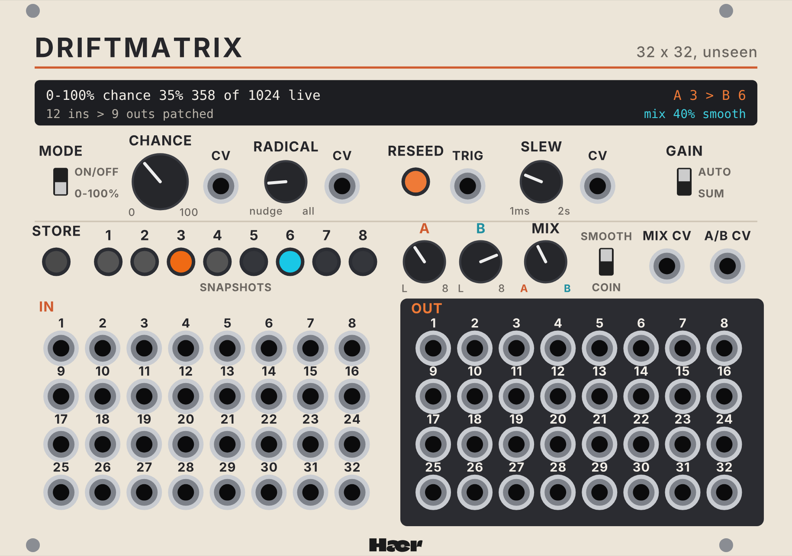

32 x 32 matrix mixer with a matrix you never see · Haer · v2.0.0

Every one of the 32 inputs can reach every one of the 32 outputs: 1024 crosspoints. You don't set them. Each crosspoint has two hidden dice: one says whether it's on, the other says how loud. You play the shape of the randomness: how dense it is, how much it changes when you reseed, and which saved versions you're morphing between.
| MODE | ON/OFF: active crosspoints at full level (clean routing, good for gates and pitch). 0-100%: each active crosspoint at its own random level (good for mixing audio and blending CVs). |
| CHANCE + CV | How likely each crosspoint is to be on. Turning up adds crosspoints one by one; turning down removes the same ones in reverse, so it behaves like a density fader, not a dice roll. |
| RADICAL + CV | How much a reseed changes. Full = a whole new matrix. 5-10 % = a small mutation, so the patch evolves the way an Autechre pattern does. |
| RESEED + TRIG | Roll new dice (as much as RADICAL says). The button flashes. |
| SLEW + CV | 1 ms to 2 s for every change. Short keeps audio click-free; long makes routings glide like slow crossfades. |
| GAIN | AUTO keeps every output at about single-input level however many inputs pile on. SUM adds them (use the right-click soft clip for hot audio). |
| STORE, slots 1-8 | Tap STORE (blinks), then a slot to save the LIVE matrix. Tap a slot on its own to load it back into LIVE, then reseed it gently with low RADICAL. |
| A, B | Pick two matrices: L (live) or slots 1-8. A lights orange, B cyan, stored slots glow dim. |
| MIX + CV | Morph from A to B. |
| SMOOTH / COIN | SMOOTH: every level crossfades. COIN: each crosspoint jumps from A to B at its own point as MIX turns, so the routing changes piece by piece. |
| A/B CV | Moves both A and B one place along (L, 1 … 8, round again) per volt. A stepped CV walks through your snapshots. |
Snapshots remember the dice, so CHANCE and MODE keep shaping them live. Only patched inputs count.
Kick, hats, clap, perc and two Francois Markovian trigger lanes into IN 1-8. OUT 1-8 into eight drum voices (Boohm, 808 Metal, Tuned Perc…). MODE ON/OFF, CHANCE 12-18 %, RADICAL 8 %. Clock ÷16 (one bar) into TRIG. Every bar a couple of triggers find a new voice; the groove stays recognisable but never repeats.
Try: store a good bar in slot 1, set A=1, B=L and ride MIX in COIN mode to fall back to the "home" groove.
LFOs, Marbles-style random, envelopes and Kleener's pitch outputs into IN 1-12. OUT 1-10 into cutoffs, wavefolds and FM depths of Buchla 259t, TwinPeaks and Mixxa. MODE 0-100%, GAIN AUTO, SLEW 400 ms-1 s. Reseed every 8 bars with RADICAL 20 %: the modulation sources wander between destinations without jumps.
Patch OUT 1-4 back into IN 1-4 through TwinPeaks, a delay and a wavefolder; feed a Buchla 259t into IN 5. CHANCE 8-15 %, 0-100%, GAIN AUTO (it keeps the loop from running away), right-click soft clip on. Slowly sweep CHANCE with a very slow LFO: the network tips between silence, drones and squeals.
Build four snapshots: sparse intro (CHANCE 10 %), groove, peak (CHANCE 35 %), break. A stepped CV that rises 1 V per section (from any sequencer) into A/B CV with A=L, B=1: each new section steps the pair along. MIX on a slow ramp in SMOOTH mode morphs into each scene rather than cutting.
Four chord-tone CVs (The Changes, or Hapax via the disting NT) into IN 1-4. OUT 1-4 to four oscillators. ON/OFF mode, GAIN AUTO, CHANCE about 30 %. With AUTO gain, an output with two inputs plays their average: in-between notes. Put a quantiser after each output for in-key voicings that reshuffle on every RESEED.
| Gentle evolution | RADICAL 5-10 %, reseed every bar or two, SLEW 50-200 ms. |
| Hard cuts | ON/OFF, RADICAL 100 %, SLEW minimum (keep 5 ms+ for audio). |
| Morph performance | Store 2-4 slots, MIX on a fader or MIDI-CC via the disting NT. |